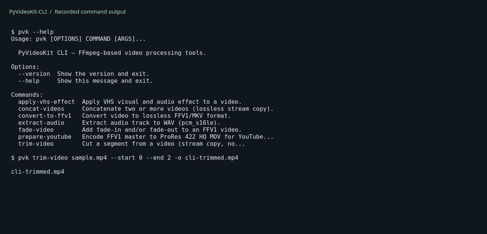

Work with your footage
Trim, concatenate, fade, extract WAV audio or apply a VHS effect.
Video toolkit / Evilchuck666
FFmpeg-based video tools as a Python library, a command line and a desktop app. Install the whole PyVideoKit family in one go.
Python · FFmpeg · SoX · Linux / Windows / macOS
In use: desktop app, command line and Python library




Trim, concatenate, fade, extract WAV audio or apply a VHS effect.
Create lossless FFV1 masters and 4K ProRes 422 HQ exports for YouTube.
Write Python, use the pvk command, or work in the PySide6 desktop interface.
Get started
Install the meta-package with pip, and make sure FFmpeg, FFprobe and SoX are in your PATH. Arch Linux users can install python-pyvideokit from the AUR.
pip install PyVideoKit
pvk --help
pvk-gui